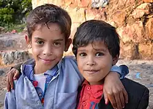

heval
BilêvkirinPronunciation
- Dildadil (Kurdî)
- Ebulfîda (Kurmancî)
WêneIllustrations

NavdêrNoun
- ( kes ) Kesên hev dinasin û têkiliyên baş li gel hev hene û ji hev hez dikin.
- Keç û kurên ji hev hez dikin lê ne jin û mêrê hev in. Hevmane: yar
- Peyvek şirîn e bo her kesê jê re tê axiftin. Heval , navê te çi ye?
- Peyvek şirîn e bo her kesê behs jê tê kirin. Hevalek bû, min nas nedikir.
- ( siyaset ) Kesên ji heman partiya yan baweriya siyasî ( bi taybetî çepgir ).
- Peyvek ji bo pizdan , plasenta tê bikaranîn.
NimûneExamples
- Heval , navê te çi ye?
- Hevalek bû, min nas nedikir.
- Xwarin bi yeqîn dewa û me'cûn Rabûne ve çûne nik hevalan Çendek ji meharim û rewalan
Ji wêjeya klasîkFrom classic literature
- ~1692, Ehmedê Xanî, Mem û Zîn:
- Xwarin bi yeqîn dewa û me'cûn
Rabûne ve çûne nik hevalan
Çendek ji meharim û rewalan
TewandinDeclension
| Zayendên mê û nêr ên binavkirî | |||
|---|---|---|---|
| Rewş | Mê (yj.) | Nêr (yj.) | Mê û nêr (pj.) |
| Navkî | heval | heval | heval |
| Îzafe | hevala | hevalê | hevalên |
| Çemandî | hevalê | hevalî | hevalan |
| Nîşandera çem. | wê hevalê | wî hevalî | wan hevalan |
| Bangkirin | hevalê | hevalo | hevalino |
| Zayendên mê û nêr ên nebinavkirî | |||
| Rewş | Mê (yj.) | Nêr (yj.) | Mê û nêr (pj.) |
| Navkî | hevalek | hevalek | hevalin |
| Îzafe | hevaleke | hevalekî | hevaline |
| Çemandî | hevalekê | hevalekî | hevalinan |
Bi Alfabeyen DinBi Alfabeyen Din
- kurdî-erebî: ههڤال
- (Mela Hisênê Bateyî) هڤال
HevmaneSynonyms
DijmaneAntonyms
JêDerived terms
- (lêker) heval bûn
- (lêker) heval kirin
- hevalbend
- hevalbendî
- (navdêr) hevalbûn
- (rengdêr) hevalbûyî
- hevaletî
- hevalî
- hevalînî
- hevalîtî
- (navdêr) hevalkirin
- (rengdêr) hevalkirî
- hevaltî
- keçheval
- keçhevalî
- keçhevaltî
- kurheval
- kurhevalî
- kurhevaltî
EtîmolojîEtymology
Ji *ham- "hev-" + *arδ "alî, teref" a Proto-Îranî. Hevreha hamāl a farsiya navîn û hamarδ a soxdî. Herwiha binêre alî
Bide berSee also
WergerTranslations
- Abronî: damvo
- Açehî: rakan
- Afarî: kataysa
- Afrîkansî: vriend, vriendin
- Albanî: mik n
- Alêwîtî: agiitaadax
- Almaniya bilind a navîn: vriunt
- Almanî: Freund n, Kumpel n, Kamerad n, Freundin m, Kumpelin m, Kumpeline m, Kameradin m
- Alutor: тумгытум (tumɣətum)
- Amharî: ጓደኛ (gʷadäña), ወዳጅ (wädaǧ)
- Apaçiya deştan: ch’ąą
- Apaçiya rojava: -dekee, chʼoondé
- Aragonî: amigo n
- Aramiya nû ya asûrî: ܚܲܒ݂ܪܵܐ n (ḳawra), ܚܲܒ݂ܸܪܬܵܐ m (ḳawirta)
- Arçî: дос (dos)
- Asamî: বন্ধু n (bondhu), বান্ধৱী m (bandhowi), লগৰ (logor), লগৰীয়া (logoria), সখী m (xokhi)
- Astûrî: amigu n, amiga m
- Avarî: гьудул (hudul)
- Aymarayî: masi
- Azerî: dost
- Baskî: lagun
- Başkîrî: дуҫ (duθ)
- Batsbî: მეგობარ (megobar)
- Belarusî: ся́бар n (sjábar), ся́бра n (sjábra), сябро́ўка m (sjabróŭka), друг n (druh), пры́яцель n (prýjacjelʹ), пры́яцелька m (prýjacjelʹka), падру́га m (padrúha)
- Belûçî: دوست (dost)
- Bengalî: বন্ধু (bôndhu), বান্ধবী (bandhbi), দোস্ত (dośt)
- Bretonî: mignon n, mignonez m, mignoned n p, mignonezed m p
- Bulgarî: прия́тел n (prijátel), прия́телка m (prijátelka)
- Burmayî: သူငယ်ချင်း (su-ngaihkyang:), မိတ်ဆွေ (mithcwe), သင်္ဂဟ (sangga.ha.), မိတ် (mit)
- Buryatî: нүхэр (nüxer)
- Cimbrî: bròint n
- Çamicuroyî: ameko, kumpali
- Çeçenî: доттагӏ (dottağ)
- Çekî: přítel n, kamarád n, přítelkyně m, kamarádka m
- Çerokî: ᎣᎩᎾᎵᎢ (oginalii)
- Çîçewayî: mnza
- Çînî:
- Çuvaşî: тус (tus)
- Dalmatî: amaic n, amaica m
- Danmarkî: ven g, veninde g, kammerat g, kammeratinde g
- Divehî: ރަތތެހި (rattehi)
- Dolganî: атас
- Dongşîangî: dosi, anda
- Elfdalî: wenn n, weninna m
- Endonezyayî: teman, sahabat, kawan, sobat, rekan
- Erebî: صَدِيق n (ṣadīq), صَدِيقَة m (ṣadīqa), صَاحِب n (ṣāḥib), صَاحِبَة m (ṣāḥiba), رَفِيق n (rafīq)
- Ermenî: ընկեր (ənker), բարեկամ (barekam)
- Erzayî: оя (oja), ялга (jalga)
- Esperantoyî: amiko, amikiĉo, amikino
- Estonî: sõber
- Evenkî: гирки (girki), анда (anda)
- Eweyî: velia
- Extremaduranî: collazu
- Farisî: دوست (dôst), رفیق (rafiq), یار (yâr)
- Ferî: vinur
- Fînî: ystävä, kaveri, frendi, ystävätär m, ystäväinen
- Fransî: ami n, copain n, amie m copine m,
- Friyolî: amì n, amie m
- Frîsiya bakur: frün n, waane n; frinj n, Frinj g
- Frîsiya kevn: friūnd, wine
- Frîsî: freon
- Gaelîka skotî: caraid n, bancharaid m
- Gagawzî: arkadaş, dost
- Galîsî: amigo n, amiga m
- Galûrîsî: amicu
- Gotî: 𐍆𐍂𐌹𐌾𐍉𐌽𐌳𐍃 n (frijōnds), 𐍆𐍂𐌹𐌾𐍉𐌽𐌳𐌹 m (frijōndi)
- Gujaratî: દોસ્ત (dost), મિત્ર (mitra)
- Gurcî: მეგობარი (megobari), მოყვარე (moq̇vare), ტოლი (ṭoli), არიფი (aripi), ნაცნობი (nacnobi), თვისტომი (tvisṭomi), ძმაკაცი (ʒmaḳaci), ამხანაგი (amxanagi)
- Guwaranî: angirũ
- Haîtî: zanmi
- Hawayî: hoaloha, hoa
- Hawsayî: aboki n, ƙawa m
- Hindî: दोस्त n yan m (dost), मित्र n yan m (mitra), साथी m (sāthī), सखा (sakhā), यार n (yār), मीत n (mīt), हबीब n (habīb), सहेली m (sahelī)
- Hirî motuyî: turana
- Hîlîgaynonî: abyan
- Hîrî motuyî: turana
- Hmongî: phooj ywg
- Holendiya kevn: friund
- Holendiya navîn: vrient
- Holendî: vriend, vriendje nt, vriendin, vriendinnetje nt, maatje nt
- Hunsrikî: Freind n, Amigo n, Freindin m, Amiga m
- Îbranî: יָדִיד n (yadíd), ידידה m (yedida), חבר n (chaver), חברה m (chavera)
- Îdoyî: amiko, amikulo, amikino
- Îgboyî: enyi
- Îlokanoyî: gayyem
- Îngilîziya kevn: frēond n
- Îngilîziya navîn: frend
- Îngilîzî: friend
- Îngûşî: доттагӏа (dottağa)
- Înterlîngua: amico
- Îrlendî: cara n
- Îrlendiya kevn: carae n
- Îsnagî: xayyam
- Îtalî: amico n, amica m
- Îzlendî: vinur n, vinkona m, vinstúlka m
- Japonî: 友達 (ともだち, tomodachi), 友人 (ゆうじん, yūjin), 朋友 (ほうゆう, hōyū)
- Jarawa: mahema, mitaǰəle
- Javayî: kanca, mitra
- Jejuyî: 벗 (beot)
- Kabîlî: amdakkel n
- Kalalîsûtî: ikinngut
- Kalmîkî: иньг (in'g), үр (ür)
- Kannadayî: ಮಿತ್ರ (mitra), ಸ್ನೇಹಿತ (snēhita)
- Kapampanganî: kaluguran
- Kapverdî: amigu, amige
- Karaçay-balkarî: нёгер (nöger), шох (şox), шуёх (şuyox)
- Karelî: ystävy, ristivelli
- Kaşayayî: tuka·yu
- Kaşûbî: przëcél n
- Katalanî: amic n, amiga m
- Kayingangî: régre
- Keçwayî: atillcha, masi, kumpa, amigu n, amiga m
- Kinaray-ayî: higala
- Kirgizî: дос (dos)
- Kîkûyûyî: mũrata sinif c1
- Kîngalî: මිතුරා (miturā)
- Kînyarwandayî: inshuti sinif c9/10, umu-gēnzi
- Komî-permyakî: ёрт (jort), друг (drug)
- Koreyî: 친구 (chin-gu), 동무 (dongmu), 벗 (beot)
- Kreyoliya fransî ya Louisiana: zami, lami, ami, boug, nèg, padna
- Krioyî: padi
- Kumikî: дост (dost), ювукъ (yuwuq), ёлдаш (yoldaş), къурдаш (qurdaş)
- Ladînoyî: amigo, amiga
- Lamboyayî: ole, oda
- Latgalî: draugs
- Latînî: amicus n, amica m
- Latviyayî: draugs n, draudzene m
- Lawsî: ສັມພັດຕະ (sam phat ta), ໝູ່ (mū), ມິດ (mit), ເພື່ອນ (phư̄an), ສະຂະ (sa kha), ສະຫາຍ (sa hāi), ສະຫາຽ (sa hāi), ສ່ຽວ (siāu)
- Lezgînî: дуст (dust)
- Lingalayî: moninga
- Lîgûrî: amigo n
- Lîtwanî: draugas n
- Lombardî: amis
- Lueyî: ᦉᦠᦻ (ṡḣaay)
- Luhyayî: omusale
- Luksembûrgî: Frënd n, Frëndin m
- Makedonî: пријател n (prijatel), пријателка m (prijatelka)
- Malayalamî: കൂട്ടുകാരൻ n (kūṭṭukāran), കൂട്ടുകാരി m (kūṭṭukāri), സുഹൃത്ത് (suhr̥ttŭ), സ്നേഹിതന് n (snēhitan), തോഴൻ n (tōḻan)
- Malezî: kawan, handai, rakan, taulan, sahabat, member, teman
- Maltayî: ħabib n
- Mançûyî: ᡤᡠᠴᡠ, ᠠᠨᡩᠠ
- Manksî: carrey n
- Maratî: बंधु (bandhu), मित्र (mitra)
- Marîkopayî: naw
- Mecarî: barát, pajtás, haver, cimbora
- Melanauyiya navendî: sakai
- Misrî:
(ḫnms)


- Mîrandî: amigo n, amio n
- Mongolî:
- Navajoyî: akʼis,
- Nedersaksî: Fründ n, Fründin m
- Almaniya jêrîn a navîn: Fründinne m
- Nepalî: मित्र (mitra), साथी (sāthī)
- Norsiya kevn: vinr n
- Norwecî:
- Oksîtaniya kevn: amic
- Oksîtanî: amic n, amiga m
- Oriyayî: ମିତ (mitô), ସଖା (sôkha), ସାଙ୍ଗ (saṅgô)
- Oromoyî: michuu
- Osetî: хӕлар (xælar), лымӕн (lymæn), ӕрдхорд (ærdxord), ӕмбал (æmbal)
- Osmanî: ارقداش (arqadaş), دوست (dost), احباب (ahbap)
- Oygurî: دوست (dost), ئاداش (adash), ئاغىنە (aghine), ئۈلپەت (ülpet)
- Ozbekî: doʻst, joʻra, rafiq
- Palî: mitta n yan nt
- Pangasînanî: kaaro
- Papyamentoyî: amigu
- Peştûyî: دوست n (dost)
- Piedmontîsî: amis n
- Pîttcantcatcarayî: iṉa
- Plodîşî: Frint n
- Polabî: fründ n
- Polonî: przyjaciel n, przyjaciółka m, druh n
- Portugalî: amigo n, amiga m
- Proto-norsî: ᚹᛁᚾᛁᛉ n (winiʀ)
- Puncabî: ਮਿੱਤਰ (mittar)
- Qazaxî: дос (dos)
- Qiptî: ϣⲫⲏⲣ (šphēr), ϣⲃⲏⲣ (šbēr)
- Marwarî: यार (yār)
- Rapanuyî: garuhoa
- Romagnolî: amig n
- Romancî: ami n, amia m
- Romanî: amal n, amalni m
- Romanyayî: amic n, amică m, prieten n, prietenă m
- Rusî: друг n (drug), подру́га m (podrúga), прия́тель n (prijátelʹ), прия́тельница m (prijátelʹnica), това́рищ n yan m (továrišč)
- Rusînî: прия́тель n (pryjátelʹ), пайташ n (pajtaš)
- Saksoniya kevn: friund
- Samiya bakurî: verdde, ustit
- Sanskrîtî: सखि (sakhi), सुहृद (suhṛda), मित्र (mitra)
- Sardinian:
- Sassarîsî: amiggu
- Sebwanoyî: higala
- Sicîlî: amicu n
- Sindhî: سکو (sakō), يار (yāru), حبيب (ḥabību), دوست (dōstu)
- Sirboxirwatî:
- Kirîlî: друг n, дру̀га̄р n, друга̀рица m, при̏јатељ n, пријатѐљица m, френд n, френдица m
- Latînî: drug n, drùgār n, drugàrica m, prȉjatelj n, prijatèljica m, frend n, frendica m
- Slaviya kevn:
- Slaviya rojavayî ya kevn: приꙗтель n (prijatelĭ)
- Slovakî: priateľ n, priateľka m, kamarát n, kamarátka m
- Slovenî: prijatelj n, prijateljica m
- Somalî: saaxiib n, saaxiibad m
- Sorbî:
- Sorbiya jêrîn: pśijaśel n, pśijaśelka m
- Sorbiya jorîn: přećel n
- Sotoyiya başûr: motswalle
- Spanî: amigo n, amiga m
- Sundanî: batur, rencang
- Svanî: აფხნეგ (apxneg)
- Swahîlî: rafiki
- Swêdî: kamrat g, vän g, väninna g
- Şanî: တႆးၵေႃႉ (táy kô̰a), ပိူၼ်ႈ (pōen)
- Şorî: нанчы (nançı), арғыш (arğış)
- Tacikî: дӯст (düst), ҷӯра (jüra), рафиқ (rafiq)
- Talysh:
- Talişî: رفق (rafeğ)
- Tagalogî: kaibigan
- Tamîlî: நண்பன் n (naṇpaṉ), நண்பி m (naṇpi), தோழன் n (tōḻaṉ), தோழி m (tōḻi)
- Taosî: púyena
- Tarifitî: amedukker n, tamedukkert m
- Tayiya bakurî: ᨻᩮᩥ᩠᩵ᨶ (poen)
- Tayî: เพื่อน (pʉ̂ʉan), สหาย, มิตร, เกลอ (gləə)
- Telûgûyî: స్నేహితుడు (snēhituḍu), మిత్రుడు n (mitruḍu), స్నేహితురాలు (snēhiturālu), మిత్రురాలు m (mitrurālu), దోస్తు (dōstu)
- Temazîxtiya atlasa navendî: ⴰⵎⴷⴷⴰⴽⴽⵯⵍ n (amddakkʷl)
- Teteriya krîmî: dost, arqadaş
- Teterî: дус (dus), әшнә (äşnä), аркадаш (arkadaş)
- Tigrînî: ዓርኪ (ʿarki), መሓዛ (mäḥaza)
- Tirkî: arkadaş, dost, ahbap, kanka
- Tirkmenî: dost, jora
- Tîbetî: གྲོགས་པོ (grogs po), མཛའ་བཤེས (mdza' bshes)
- Tokpisinî: pren
- Toxarî B: waṣamo
- Tuvanî: өңнүк (öñnük)
- Tûpiya kevn: abaré
- Udmurtî: эш (eš)
- Ugarîtî: 𐎈𐎁𐎗 (ḥbr), 𐎗𐎓 (rʿ)
- Urdûyî: دوست n yan m (dost), متر n yan m (mitra)
- Ûkraynî: друг n (druh), при́ятель n (prýjatelʹ), подру́га m (podrúha), по́друга m (pódruha), при́ятелька m (prýjatelʹka)
- Venîsî: amigo n
- Viyetnamî: người bạn, bạn
- Volapûkî: flen
- Votî: sõbrõ
- Warayî: sangkay, agaw, abyan
- Weylsî: ffrind n, cyfaill n
- Wîlamowî: frajnd n, frajndyn m
- Wînnebagoyî: hicakoro
- Xakasî: нанӌы (nancı)
- Ximêrî: មិត្ត (mɨttɑɑ), ពួកម៉ាក (puəkmaak), ភឿន (phɨən)
- Yakutî: доҕор (doğor), атас (atas)
- Yidîşî: פֿרײַנד n (fraynd), פֿרײַנדין m (frayndin), חבֿר n (khaver)
- Yorubayî: ọ̀rẹ́
- Yupîkiya navendî: aiparnaarraq
- Yûnanî: φίλος n (fílos), φίλη m (fíli)
- Kevn: φίλος n (phílos)
- Zhuangî: baengzyoux, baengz, youxdoix
- Zimanê destan ê emerîkî: FRIEND
- Ev qismê Wergerê ji malûmatên naveroka vê versiyona madeya friend a Wîkîferhenga îngilîzî pêk tê.